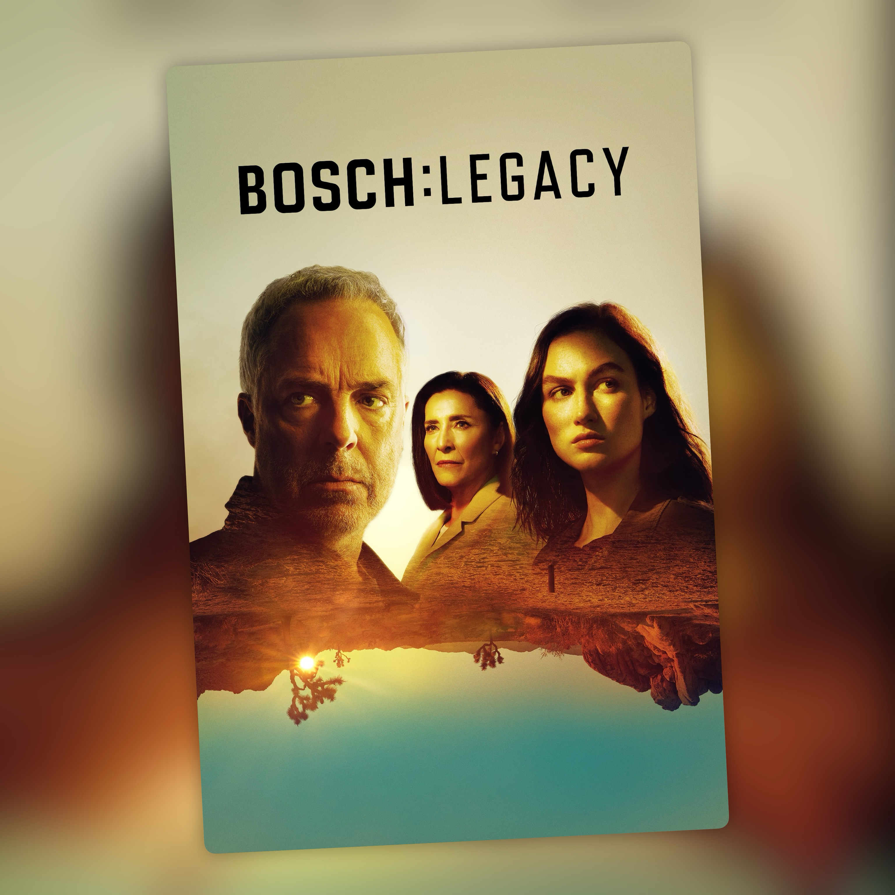

Bosch: Legacy (2022-2025)
Diez temporadas después, Harry se despide sin que nadie estuviera preparado para decir adiós

Harry Bosch dejó la policía al terminar Bosch, pero estaba claro que no iba a quedarse tranquilamente jubilado. Bosch: Legacy retoma la historia dos años después, con Harry convertido en detective privado, trabajando junto a Honey Chandler y con su hija Maddie empezando su propia carrera en la policía de Los Ángeles.
Las tres temporadas mantienen bastante bien la esencia de la serie original. Sigue estando ese Los Ángeles oscuro, los casos que avanzan sin prisas, la corrupción, los abogados, los policías y ese tono de novela negra que tan bien le sienta al personaje. La diferencia es que ahora Harry ya no tiene una placa y puede moverse con mucha más libertad, aunque también tiene que buscarse la vida de otra manera.
Me gusta especialmente cómo funciona la relación entre Bosch y Honey Chandler. Venían de ser enemigos en la serie original y aquí terminan formando una pareja de trabajo que funciona muy bien. Harry sigue siendo Harry: cabezota, obsesionado con la justicia y dispuesto a llegar hasta donde haga falta para resolver un caso. Honey es mucho más calculadora y sabe moverse dentro del sistema. Son diferentes, pero tienen bastante en común en la forma de entender lo que significa hacer justicia.
Maddie también gana mucho peso. Al principio parece inevitable que viva bajo la sombra de su padre, pero la serie va construyendo su propio camino como policía. Me gusta que no se limite a ser «la hija de Bosch» y que tenga sus propios casos, sus problemas y sus decisiones.
Las tres temporadas tienen sus altibajos, pero mantienen un nivel bastante constante. No necesita reinventar la fórmula para seguir funcionando. Titus Welliver sigue siendo el alma de la serie y después de diez temporadas ya cuesta imaginar a otro actor haciendo de Harry Bosch.
Y precisamente por eso la tercera temporada me deja un sabor agridulce.
Amazon anunció en septiembre de 2024 que cancelaba la serie, cuando todavía faltaban meses para estrenar esta última temporada. Lo curioso es que mientras rodaban la tercera ya estaban hablando de ideas para una cuarta, según ha contado Titus Welliver. No estaban preparando una despedida.
Y se nota.
La tercera temporada tiene buenos casos y mantiene la calidad de las anteriores, pero cuesta verla como un verdadero final porque no fue concebida como tal. El último episodio introduce además a Renée Ballard y funciona en parte como puerta de entrada a la nueva serie. Está bien como continuación del universo de Connelly, pero deja a Harry Bosch sin esa despedida que habría tenido si hubieran sabido desde el principio que aquello era el final.
Aun así, me quedo con cuatro estrellas. Bosch: Legacy consigue algo que no era sencillo: continuar una serie que ya había durado siete temporadas sin cargarse lo que funcionaba. Harry sigue siendo el mismo, el mundo sigue teniendo ese aire de novela negra y los personajes nuevos terminan encontrando su sitio.
Diez temporadas después, Harry Bosch se despide. No porque la historia hubiera terminado, sino porque Amazon decidió que era el momento de terminarla. Y teniendo en cuenta que quienes estaban haciendo la serie querían seguir, resulta todavía más fácil entender esa sensación de final a medias.
Ficha técnica
- Título original: Bosch: Legacy
- Creada por: Michael Connelly, Tom Bernardo y Eric Overmyer
- Basada en: los personajes y novelas de Michael Connelly
- Reparto principal: Titus Welliver, Mimi Rogers, Madison Lintz, Stephen A. Chang, Denise G. Sanchez
- Temporadas: 3 (30 episodios, 2022-2025)
- Plataforma(s) actual(es) en España: Prime Video